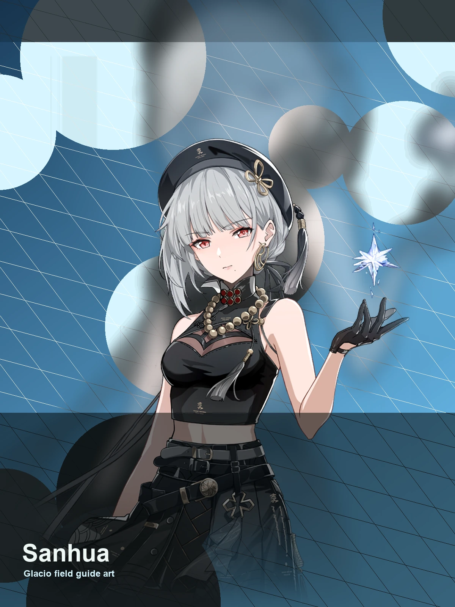

WaveKit
WaveKit

Wuthering Waves Resonator guide
Sanhua build, teams, weapons, and Echoes
Excellent low-cost helper, especially for Basic Attack teams.
Skill priority
Team compositions
Use the helper to match Sanhua with your owned Resonators, then prioritise role coverage and a comfortable sustain slot.
Good for players who do not want to force a team they cannot actually build yet.
New player reading guide
If you are only checking Sanhua before building a profile, start by confirming their role, weapon type, Sonata, and whether they need a real healer or a specific helper.
Sanhua guide overview
Sanhua is a Glacio sub dps in Wuthering Waves. This WaveKit guide focuses on the practical build choices most players need first: weapon options, Sonata and Echo setup, stat priority, simple rotation notes, and team shells that make sense for real accounts.
Quick build
- Role
- Sub DPS
- Team type
- basic
- Best weapon
- Emerald of Genesis
- Alternate weapons
- Commando of Conviction / Lunar Cutter
- Sonata
- Moonlit Clouds
- Echo cost
- 4-3-3-1-1
- Main Echo
- Impermanence Heron
- Main stats
- CRIT Rate or CRIT DMG / Glacio DMG or Energy Regen / ATK%
Stat priority
- Energy Regen for consistent setup
- CRIT if they deal meaningful damage
- Glacio DMG or kit scaling stat
- ATK% or utility substats
Team direction
Sanhua is best handled by matching their role with the teammates you actually own.
WaveKit treats Sanhua as flexible. Use the team helper to match them with your owned roster instead of forcing one fixed team.
Useful teammates
No fixed teammate pool is required. Prioritise role coverage, safe sustain, and matching build needs.
Simple play pattern
- Use Sanhua as a setup piece: apply their buff, effect, or off-field pressure first.
- Swap back to the carry once their useful window is active.
- If their setup feels late, add Energy Regen before chasing more damage.
Build priority
- Difficulty
- Flexible
- Safety
- Utility support
- Data note
- Guide checked
Sanhua is most valuable when their buff, element, or mechanic matches the carry you want to build.
Sanhua FAQ
What is the best Sanhua build in Wuthering Waves?
Sanhua's recommended WaveKit setup is Basic ATK Sub-DPS Build, using Emerald of Genesis, Moonlit Clouds, and Impermanence Heron as the main Echo target.
What stats should Sanhua use?
Start with CRIT Rate or CRIT DMG / Glacio DMG or Energy Regen / ATK%. If the rotation feels uncomfortable, improve Energy Regen or defensive comfort before chasing perfect substats.
What teams work with Sanhua?
Sanhua is flexible, so the best team depends on the Resonators and weapons you own.
Is Sanhua beginner friendly?
Sanhua's current difficulty is listed as Flexible. If you are learning, pair them with safer sustain or defensive support.